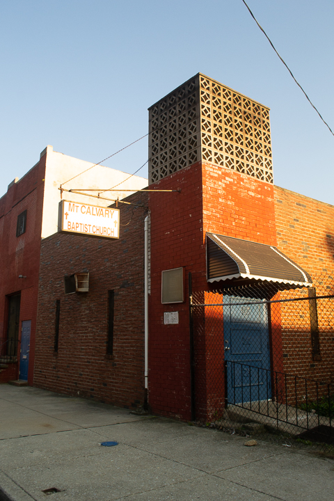
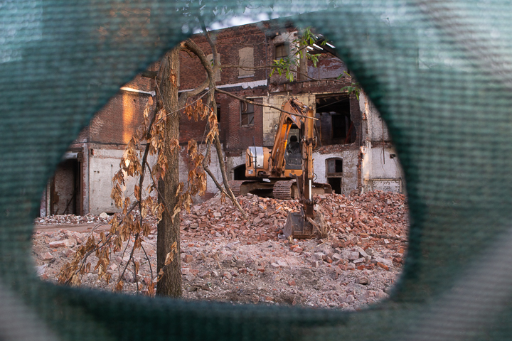
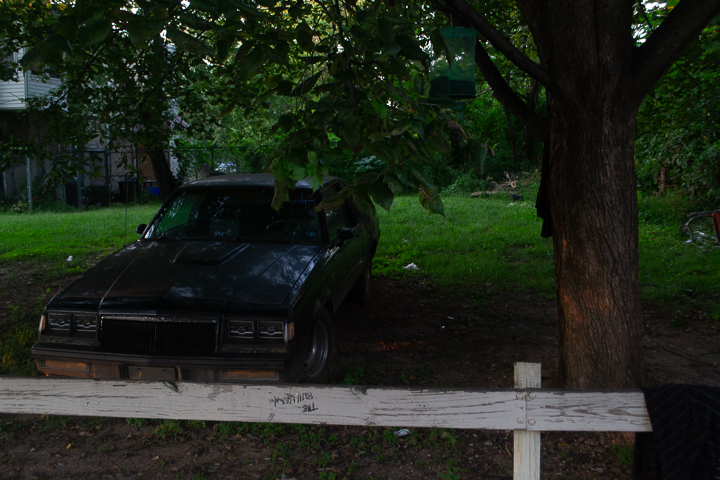
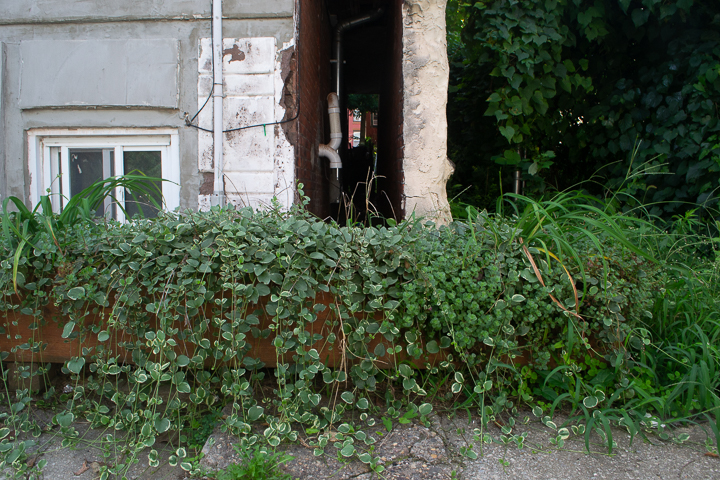

I loved the reflection and framing I was able to get in this image.

Sunny Church
This shot taken during golden hour has great contrast. The lighting
on the building lines up with the building itself and draws in the eye.

View of New Construction
This is another image where I used framing to convey a certain tone.
The view into the court yard is interesting and I love the placement of
the front-loader in the image.

Abandoned Car Under a Tree
I really love how this picture looks, but it is definitely not one of my
most technical pieces.

Flower Bed in Front of a Dark Hallway
I like the two different views held within this image. The contrast between the light horizontal
space and the dark third dimensional space is very interesting and gives the
image a sense of depth.